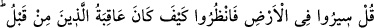
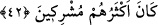
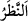
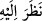
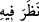
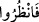
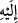
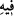

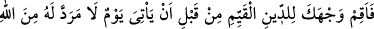
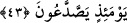
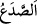
42. (Rasûlüm!) De ki: Yeryüzünde gezip dolaşın da, daha öncekilerin âkıbetleri
nice oldu bir bakıp düşünün. Onların çoğu müşrik idi.
Ey Muhammed! “De ki:” Ey müşrikler “Yeryüzünde” azab edilen ümmetlerin
topraklarında “gezip dolaşın da,” yolculuk yapın da “daha öncekilerin âkıbetleri” yâni
sizden önce olanların işlerinin sonu “nice oldu bir bakıp düşünün.”
“__WORD__ (bakmak)” iki türlüdür: Bir kimse bir şeye gözüyle baktığı zaman “__WORD__ (Ona
baktı)” denir. Kalbi ile tefekkür ettiğinde ise “__WORD__ (Onu düşündü)” denir. Bu âyette ise
“__WORD__ buyrulmuş, onların eserlerini görmeye ve hallerini düşünmeye delâlet etmesi
için “__WORD__” veya “__WORD__” harf-i cerri söylenmemiştir.
“Onların çoğu müşrik idi.” Yâni öncekilerin çoğu müşriklerdi. Şirkleri sebebiyle
helâk edildiler. Bu cümle, onların başına gelenin aralarında şirkin yaygınlık kazanması
sebebiyle olduğuna veya şirkin onların çoğunda bulunduğuna, diğer ma‘sıyetlerin ise
onların azında bulunduğuna delâlet etmek için olan bir başlangıç cümlesidir. Şirkleri ve
ma‘sıyetleri sebebiyle onlara azab isabet ettiğine göre onların sıfatı üzere bulunan
Kureyş müşrikleri ve başkaları bunda ısrar etmekten sakınsın.
43. Allah katından, dönüşü olmayan bir gün (kıyâmet günü) gelmeden önce
yüzünü o gerçek dine çevir! O gün (insanlar) bölük bölük ayrılacaklardır.
Ey Muhammed “Allah katından, dönüşü olmayan” Allah Teâlâ’nın kadîm irâdesi
onun geleceğine taalluk ettiği için O’nun geri çevirmeyeceği, -Çünkü O bunu
vaadetmiştir ve O vaadinden dönmez-, hiç kimsenin geri çevirmeye güç yetiremeyeceği
ve o vakit îman etmesinin kimseye fayda vermeyeceği “bir gün” kıyâmet günü
“gelmeden önce yüzünü” dosdoğru olup kendisinde asla eğrilik olmayan “o gerçek
dine” İslâm dinine “çevir!” yönelt. Yüzü dine çevirmenin mânâsı bu sûrede geçmişti.
“O gün” yâni kıyâmet günü Allah mahşerde bekleyenleri hesaba çekmesinden sonra
“(insanlar) bölük bölük ayrılacaklardır.” Bir bölük cennette, bir bölük cehennemde
olacaktır ki sonraki âyet bunu anlatmaktadır.
“__WORD__, cam, demir ve benzeri sert cisimlerin çatlayıp bölünmesidir. Buradan istiâre